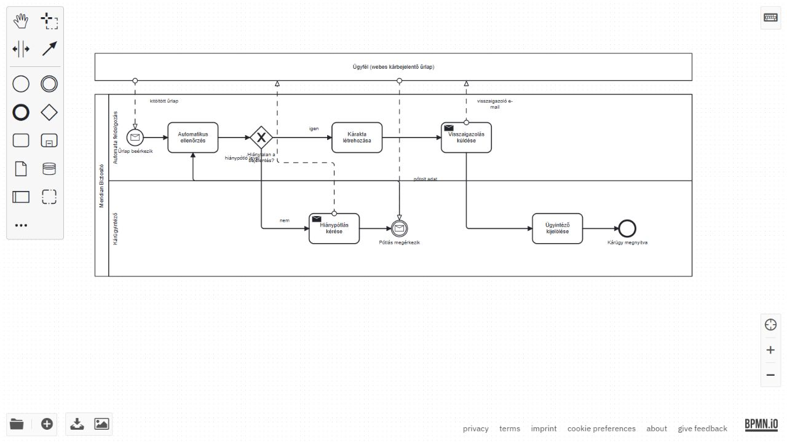

BPA · nap02 · 03 · Mentett, ellenőrzött eredmények (2026-10-05)
Meridian

3. blokk – Meridian kárfelvétel
- Meridian Biztosító medence: Automata feldolgozás és Kárügyintéző sávok.
- Űrlap beérkezik (üzenet-kezdő esemény) → Automatikus ellenőrzés → Hiánytalan a bejelentés?
- Igen: Kárakta létrehozása → Visszaigazolás küldése (Send Task) → Ügyintéző kijelölése → Kárügy megnyitva.
- Nem: Hiánypótlás kérése (Send Task) → Pótlás megérkezik (fogadó üzenet-esemény) → vissza ugyanahhoz az Automatikus ellenőrzéshez.
- Az Ügyfél külön, összecsukott medence. Négy üzenetáramlás: kitöltött űrlap, hiánypótló levél, pótolt adat, visszaigazoló e-mail.
- Sorrendáramlás csak a biztosító medencéjén belül halad; szervezetek között üzenetáramlás van. A sávhatár nem medencehatár.
A strukturált űrlap kötelező mezőkkel, listákkal és mellékletekkel szabályalapú ellenőrzést tesz lehetővé. Szabad szöveghez vagy képekhez AI segíthet, de az egyedi kárügy érdemi elbírálásának emberi ellenőrzése szükséges. Ez a modell a kárfelvételt és a kárügy megnyitását írja le, nem a kárkifizetésről való döntést.
Fájl: meridian_karfelvetel.bpmn. Az oktatói referencia szerkeszthető másolatából készült, explicit incoming/outgoing kapcsolatokkal. A modell bpmn.io-ban megnyílt, mindkét sáv és négy üzenetáramlás látható. Ábra.